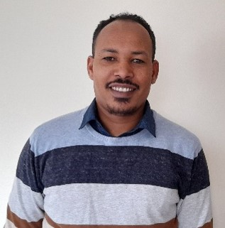
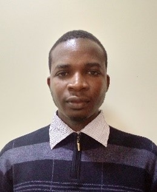
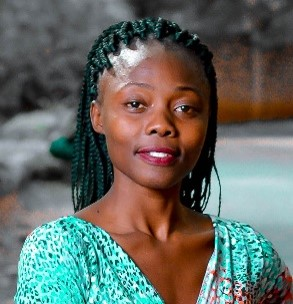
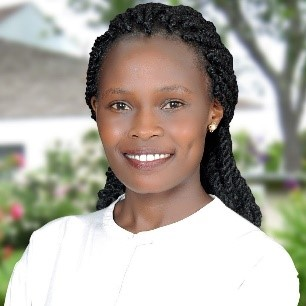
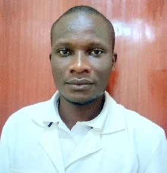
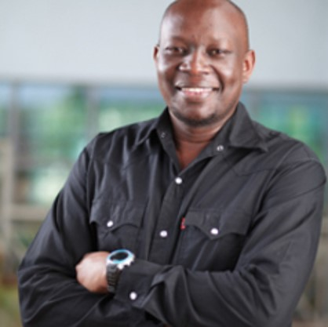
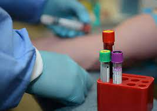
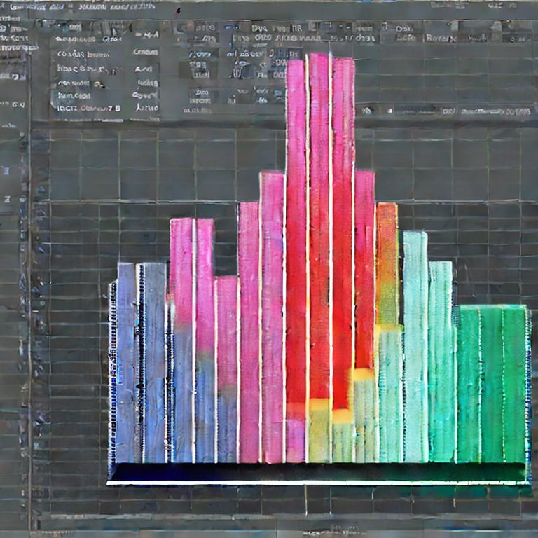
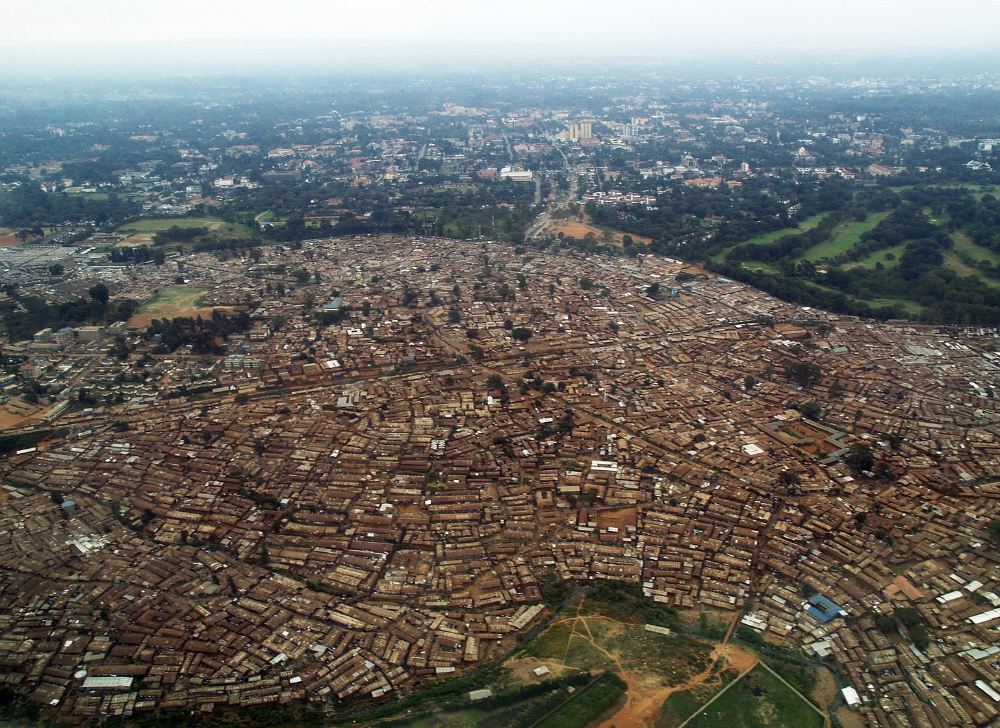

People
University of Iowa

Kelly Baker (Principal Investigator)
Sabin Gaire (Graduate Research Assistant)
 Fanta Gutema (Post-doctoral Fellow)
Alexis Kapanka (Graduate Research Assistant)
Sriram Pemmaraju (Co-investigator)
Daniel Sewell (Principal Investigator)
Luis Torres (Graduate Research Assistant)
Gabriele Villarini (Co-investigator)
African Population and Health Research Center
 John Agira (Laboratory Assistant)
 Christine Amondi (Laboratory Assistant)
 Phylis Busienei (Study Coordinator)
Blessing Mberu (Co-investigator)
 Bonphace Okoth (Laboratory Assistant)
Sheillah Simiyu (prior Project Manager, now she’s …?)
Innocent Tumwebaz (Project Manager)
Abdhalah Ziraba (Co-investigator)
Maseno University
 Collins Ouma (???)
Microbiology and Epidemioloy

John Agira (Laboratory Assistant)
Christine Amondi (Laboratory Assistant)
Kelly Baker (Principal Investigator)
Fanta Gutema (Post-doctoral Fellow)
Alexis Kapanka (Graduate Research Assistant)
Bonphace Okoth (Laboratory Assistant)
Collins Ouma (???)
Abdhalah Ziraba (Co-investigator)
Statistics and Computer Science

Sabin Gaire (Graduate Research Assistant)
Sriram Pemmaraju (Co-investigator)
Daniel Sewell (Principal Investigator)
Community and Behavioral Science

Phylis Busienei (Study Coordinator)
Sheillah Simiyu (prior Project Manager, now she’s …?)
Innocent Tumwebaz (Project Manager)
Demography and Urban Policy

Blessing Mberu (Co-investigator)
Climate Science
Luis Torres (Graduate Research Assistant)
Gabriele Villarini (Co-investigator)